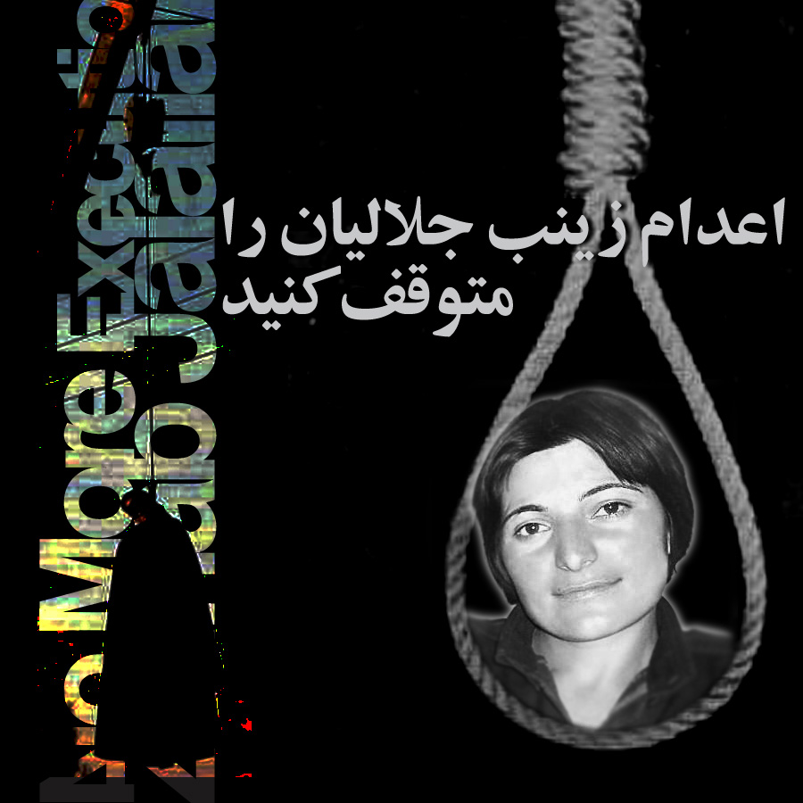
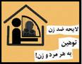
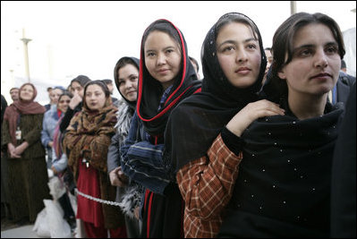
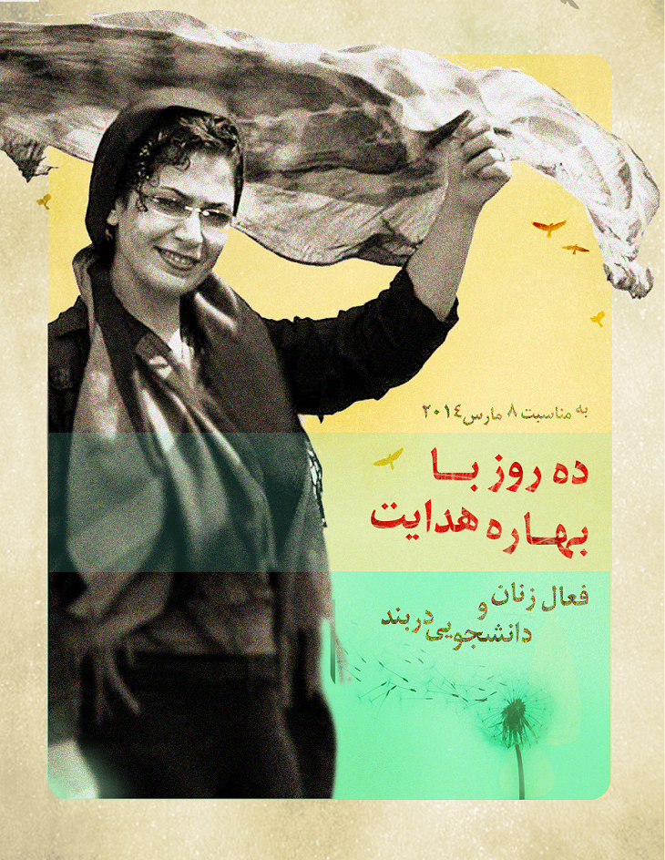

تغییر برای برابری
تغییر برای برابریسایت ها را می گردیم، از لحظه ای که خبر را شنیده ایم سایت ها را به دنبال اسمت به دنبال نشانی از تو می گردیم که نشانی، کم پیدا ست ، مثل رد پاهایت روی برف روزی که از خانه فرار کردی و هجده ساله بودی که لابد توی برف گم می شده اند یا روی سنگلاخ کوه یا زیر تابش آفتاب در دشت که نمی دانم چه فصلی بوده، فصل رفتنت را انگار اما رقم می زنند که تابستان باشد ...
پذيرش > واژه كليدها > صفحه بندی > ستون وسط
ستون وسط
مقالهها
-

ما می خواهیم که زنده بمانی
28 ژوئن 2010 -

اعتراض بیش از1200 مدافع حقوق برابر به لایحه حمایت از خانواده: نگذاريم لايحه ضد خانواده در مجلس به تصويب برسد
17 فوريه 2010بیش از 1200 نفر از مدافعان حقوق برابر اعتراض خود را نسبت به تصویب لایحه حمایت از خانواده اعلام کردند.
-
کنشگران بی تاریخ نباشیم (نقدی از درون) /جلوه جواهری
15 مارس 2010, بوسيلهى pariباید دید این انتقاد که جنبش زنان در فضای کنونی چندان نتوانسته حرکتی در خور داشته باشد از چه منظری مطرح است. آیا به این لحاظ، که جنبش زنان در پی مطالبات جنبش سبز نبوده و هزینه ای برای آن نمی پردازد؟ یا آنکه جنبش زنان دیگر پیگیر مطالبات خود نیست؟
-
 نامه سرگشاده جمعی از فعالان کمپین یک میلیون امضا به ریاست قوه قضائیه
نامه سرگشاده جمعی از فعالان کمپین یک میلیون امضا به ریاست قوه قضائیه
24 مه 2010بیش از چهارماه هست که از بازداشت محبوبه کرمی, یکی از فعالان حقوق زن در کمپین یک میلیون امضا می گذرد اما تاکنون هیچ پاسخ روشنی از وضعیت وی به وکلا یا خانواده ایشان داده نشده است. محبوبه کرمی در تاریخ 11 اسفند 88 بازداشت شد. از آن زمان تا کنون وکلای وی نه به پرونده دسترسی داشته اند و نه اجازه ملاقات با موکلشان را داشته اند. هیچ مرجع قانونی نیز توضیحی در مورد اتهامات وارده به وی ارائه نداده است.
-
 آری شود / بنفشه حجازی
آری شود / بنفشه حجازی
18 ژوئيه 2009, بوسيلهى pariبال زدن یک پروانه می تواند توفان ایجاد کند.همه راه های ممکن راباید آزمود و به تلاش همه باید ارج نهاد. این کار مسابقه نیست و کسی برسکوی قهرمانی نمی رود.
-
 به حبس کشیدن وکیل، تنها به جرم دفاع از موکلان
به حبس کشیدن وکیل، تنها به جرم دفاع از موکلان
3 اكتبر 2010روز یکشنبه، مراسم ترحیم پدر نسرین ستوده، وکیل شجاع جنبش زنان بود. وکیل مدافعی که از زمانی که پروانه وکالتش را دریافت کرد و اجازه وکالت یافت، وکیل بسیاری از متهمان و زندانیان سیاسی شد و با ایمان و اعتقاد بسیار از آنها دفاع کرد. اما جای این وکیل جسور در این مراسم بسیار خالی بود و علی رغم وعده ای که برای آزادی او در مراسم ختم پدرش داده شد، شاهد ادامه بازداشت او بودیم...
-
دیدار با نسرین ستوده: دست های شاهدی که هرگز پایین نمی آیند
29 مه 2011ما از دیدن نسرین و نسرین از دیدار ما، همه ذوق زده شده ایم. نسرین را در آغوش می کشیم. بغض هاست که می ترکد. معلوم نیست از شوق دیدار است یا دلتنگی 9 ماهه یا پایداری چهره ای که از او بسیار آموخته ایم. اشک ها روان است.
-
گفتگو با یکی از زنان انقلابی مصر: رویای ما بر اسلحه ی شکننده آنها پیروز شد
11 آوريل 2011مشارکت زنان یکی از اصلی ترین شادی های من در روزهای انقلاب بود. ما مصری بودیم، نه زن یا مرد. زنان در میدان التحریر همانند مردان با نیروهای امنیتی می جنگیدند، ما شبها در میدان خوابیدیم و تمام لحظه های شادی و اندوه را باهم قسمت کردیم. هیچ آزاری در کار نیود و مردم به زنان احترام می گذاشتند و برابری را در برخورد با آنها رعایت می کردند.این انقلاب متعلق به نسل جدیدی بود که روشنفکر بودند و علی رغم جنسیت به یکدیگر احترام می گذاشتند. منظورم این نیست که به کل موضوعات مربوط به جنسیت را فراموش کرده ایم بلکه می خواهم بگویم همان نسلی که برای این انقلاب جنگید می تواند علیه سنت و نابرابری جنسیتی هم بجنگد. مردم فهمیده اند که قدرت در دست تک تک انسان هاست و جامعه سلسله مراتبی ندارد...
-

روایت زنان افغانستان پس از ده سال اشغال
16 اكتبر 2011ده سال پس از اشغال افغانستان توسط نیروهای ناتو سحر صبا از فعالین جنبش زنان افغانستان و مقیم شهر کابل پنج پرسش را با پنج زن افغانی در مورد زندگی آنان و تغییرات محسوس و نا محسوسی که طی یک دهه اشغال صورت گرفته است،
-

ده سال یک عدد نیست، یک عمر است!
8 مارس 2014کم کم یادمان رفت که او هر روز چشمش را پشت میله ها باز می کند و شب ها پلک هایش ، پشت میله ها بسته می شود. یادمان رفت که هر روز جسمش ضعیف تر می شود، هر روز، یک روز به تقویم دوری اش از کسانی که دوستشان دارد، افزوده می شود. کم کم درگیر تب و تاب وقایع جدید شدیم، برخی امیدوار شدند که شاید روزهای خوشی در راه است، آستین ها را بالا زدند و دست به کار مهیا کردن زمینه های تغییر شدند، اما روزها گذشتند و هنوز تغییری نیامده است. تغییری که بهاره را دوباره به خیابان های این شهر و به جاهایی که به او متعلق است، بازگرداند. بهار دیگری در راه است، اما اگر نخواهیم تنها به بهاری در کنار بهاره ها،" امیدوار" باشیم باید آستین ها را بالا زد و کاری کرد. کاری بیشتر از نوشتن این چند خط...
0 | ... | 70 | 80 | 90 | 100 | 110 | 120 | 130 | 140 | 150 | ... | 450